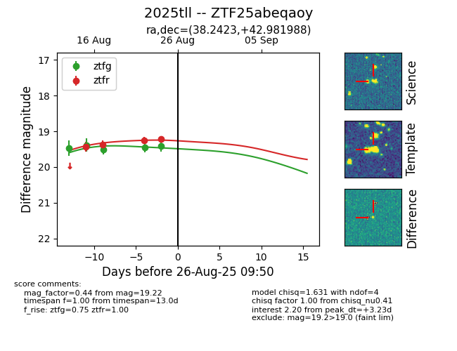

Target 2025tll at 2025-08-26 10:37, see:
FINK: fink-portal.org/ZTF25abeqaoy
Lasair: lasair-ztf.lsst.ac.uk/objects/ZTF25abeqaoy
ALeRCE: alerce.online/object/ZTF25abeqaoy
TNS: wis-tns.org/object/2025tll
YSE: ziggy.ucolick.org/yse/transient_detail/2025tll
alt names
ZTF25abeqaoy (ztf,fink)
2025tll (tns,yse)
coordinates:
equatorial (ra, dec) = (38.2423,+42.98199)
galactic (l, b) = (141.9825,-16.10258)
photometry
last atlaso=19.28, ztfg=19.41, ztfr=19.22
2 atlaso, 5 ztfg, 4 ztfr detections
